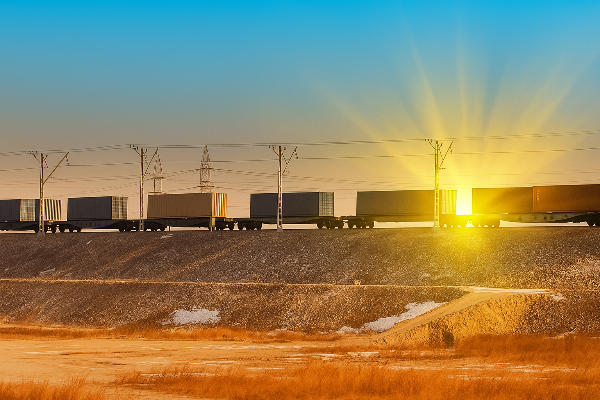

About Us
Our Partners
| Joshi Group | Konoike Group |
|---|---|
| ACTL, the Groups flagship container terminal, pioneered the establishment of “Dry Port” in Northern India becoming the first private ICD (Inland Container Depot) commissioned in 1997. ACTL is a totally self sufficient ICD, with dedicated Customs staff, bank branch within premises, dedicated rail siding (which can handle export/ import as well as domestic cargo) with 24x7 operations and train examination facilities as well as deputed railway personnel, container repair facility, in-house workshop and a highly motivated and trained pool of man power. | The company was formed in 1880 and has been in logistics and transport for over 130 years! Today, the company provides end-to-end logistics services to some of the most well know organizations worldwide. The array of services includes ocean freight, transport, project/ heavy cargo movement, installation, customs clearance and cold chain solutions. In March 2013, Konoike officially listed on Tokyo Stock Exchange. |
| www.actlindia.com | www.konoike.net |